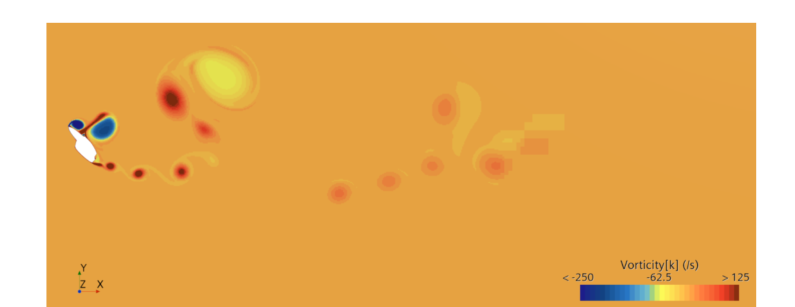
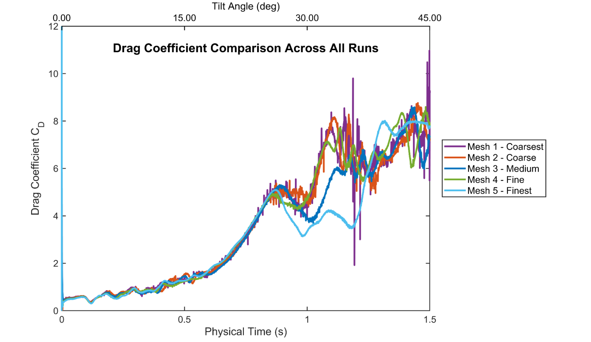
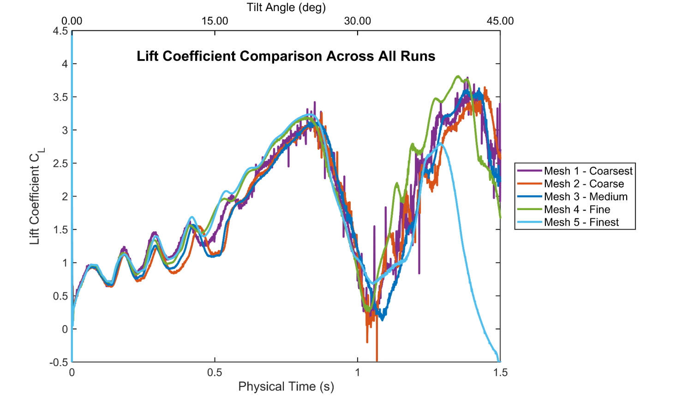
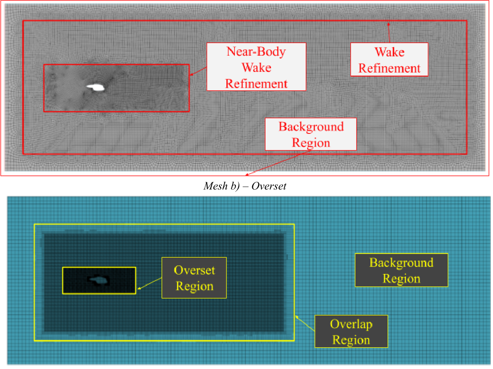
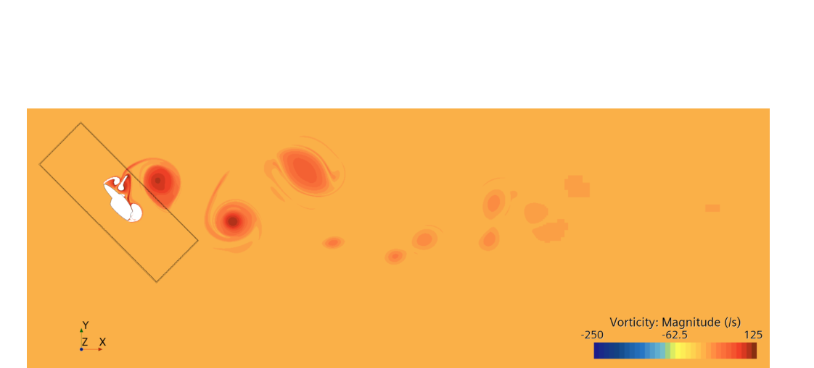
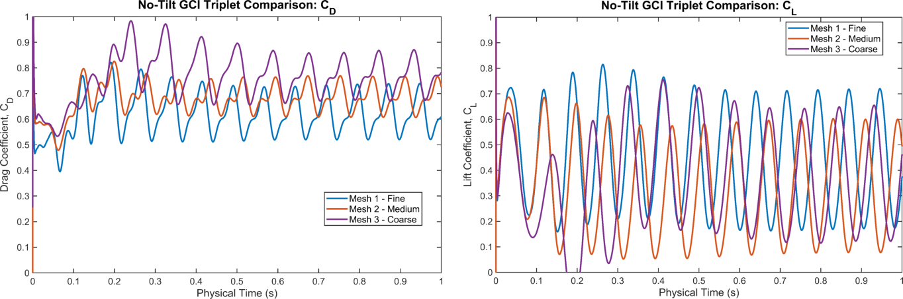

Tiltrotor Nacelle Wake During Conversion
A 2D URANS overset study of wake behaviour and coherent vortex structure through a 45° conversion sweep, based on representative XV-15 nacelle geometry.

Overview
- My individual final-year project (EMS690U), supervised by Dr Eldad Avital, as part of a team concept for a modernised urban air mobility (UAM) tiltrotor based on the Bell XV-15.
- Our group split the tiltrotor into constituent sections, and I decided to work on the conversion mechanics. I investigated the wake aerodynamics during tiltrotor conversion from forward to vertical flight.
- I modelled the nacelle as a 2D section under a prescribed rigid rotation of 45° at 30°/s, solved with URANS on an overset grid in STAR-CCM+.
Scope
The brief I started from was a higher-fidelity comparison of tilting-wing against tilting-nacelle conversion, including 3D fluid-structure interaction. I had no HPC access, and my final 2D runs took between 13 and 90 hours each on a local machine. A 3D FSI case could not run within the time frame and equipment constraints of the project.
I narrowed the goal of my project early in the timeline. This led me to the next best question I could answer with the available compute power: which wake characteristics can be extracted from a reduced-order model with enough confidence to say something useful about the tilting phase?
This was investigated via a full grid convergence study on a stationary baseline, five tilting overset meshes, and frequency analysis across the whole sweep.
Headline Findings
- Drag rises through the sweep. This is the clearest integral trend, and it holds across all five meshes, although the magnitudes differ. The aerodynamic drag grows as the conversion proceeds.
- Lift is far more mesh-sensitive. The runs agree closely early in the motion and separate later, with a pronounced dip and recovery in CL indicating that the flow is reorganising.
- The nacelle cannot be treated as a quasi-static loading case. Frequency analysis returned several bands of differing confidence instead of one stationary shedding mode.
- The late tilting phase is the most aerodynamically sensitive part of the sweep, and the regime to prioritise in any higher-fidelity aeroelastic work.


Limitations
The project's framework was reduced to the following: a simplified 2D section under prescribed rigid rotation, with no wing, no proprotor and no aeroelastic coupling. The no-tilt grid convergence study supports the transient methodology on the fixed-body problem, but it does not prove convergence for the tilting case. The vortex-identification and frequency results should be read comparatively, not as design loads or settled shedding frequencies.
Future Work
- Install the wing and proprotor, and move to 3D fluid-structure interaction.
- Compare tilting-wing against tilting-nacelle conversion in the same reduced-order framework, so the two are directly comparable.
- Run a mesh triplet for the conversion case, so that an asymptotic range can be established for it.
- Extend the domain aft to include the empennage. The wake broadens and directly affects the flight dynamics of the aircraft, which this project did not study.
Explore This Project

Model & Numerical Setup
Geometry, domain, solver choice, meshing strategy and near-wall treatment.

Wake & Vortex Behaviour
Vortex identification, wake evolution through tilt, and frequency-domain analysis.

Validation & Mesh Sensitivity
The grid convergence study, the tilting mesh family, and which results are actually converged.